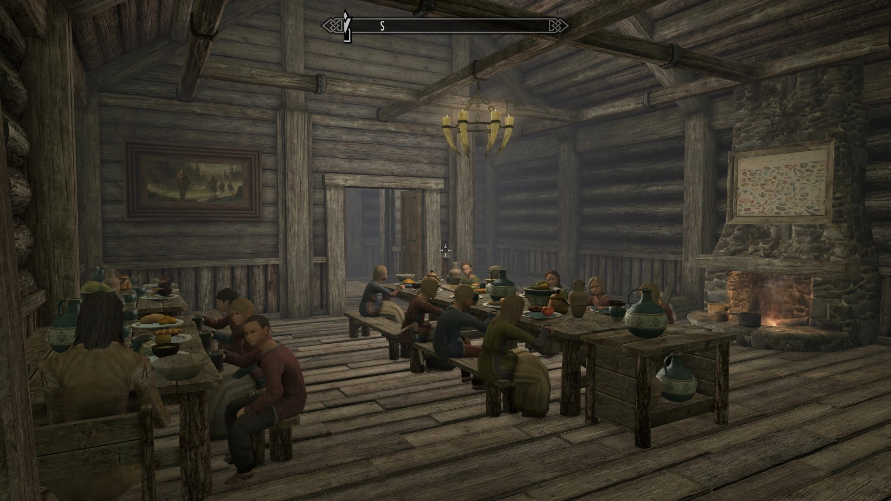

Riften Inquirer
Orphans Need Homes
Grelod the kind wishes to remind everyone that the little rats she cares for are available for adoption should anyone feel the need to bother. Should they prefer, arrangements can be made to rent them for temporary housework.
Help Wanted
- Seeking a new face, Interested parties should inquire for Galathil, those who know how to contact him will know
- Maven seeks help at the Meadery, Pay to be commiserate to the work performed
- Cragslane Cavern has been taken over by Bandits, Ablebodies will be compensated for clearing them out.
Maven Black-Briar, A Model of Leadership

Maven Black-Briar has been a model citizen of Skyrim since her youth, and the release of a new variety of Black-Briar Mead seemed the perfect excuse to present a profile on Riften's most powerful person.
Born to the notable Black-Briar family, Maven inhereted a meadery that peddled, as she puts it, dreck shlock. Putting her mind and efforts to her causes she quickly struck upon a recipe that found its home in many of Skyrims citizenry. Noted as ruthless to her competition, she is quick to cut deals and savage potential competition before it ever reaches the point of threat.
Currently Maven continues to run the Black-Briar meadery, though her influence is felt far beyond the Meadhalls perhaps even extending far past the Jarl herself. Though Maven has never considered taking the Jarls seat, it is clear that should she get the opportunity she would lead Riften into prosperity just like she has the Meadery.
Thieves Guild, Myth or Fact?

Once a feared force in all of Tamriel, have the Thieves Guild gone the way of the Snow Elves?
The Thieves Guild seems all but a past force upon the world, where once the world feared the grabby hands they weilded, now it seems laughable to worry about any sort of thief from anything. Thieves who once stole with grace and guile now get themselves caught with what seems like the rookiest of mistakes.
Anonymous people claiming to be members say the Guild is as strong as ever, and we simply do not notice the things they manage to steal If that's the case, continue stealing the small trinkets we can't even care about. Such continued non-notablility will certainly be something the city rues.